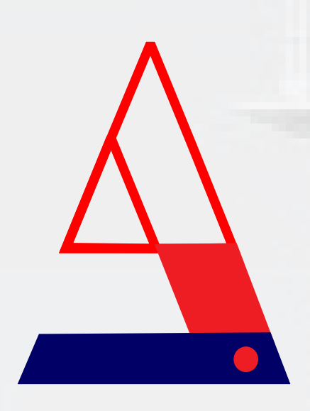

<!DOCTYPE html>
<html lang="en">
<head>
    <meta charset="UTF-8">
    <meta name="viewport" content="width=device-width, initial-scale=1.0">
    <title>Andy Zipamor</title>
    <style>

        
/*footer*/
footer {
    background-color: black;
    color: gray;
    text-align: center;
    padding: 5px 10px;
    font-size: 15px;
    text-transform: uppercase;
}

    </style>
     <link rel="stylesheet" href="style.css">
</head>
<body>
    <section class="logo"></section> 
    <section class="Reg">RC: 1191422</section>
    <h1>ANDYZIPAMOR <h1><div></div>CONSTRUCTION COY NIG LTD </div></h1>

    <br>

<header>
    <label form="toggle"></label>
    <div>
    <nav>

       <ul>

        <li><a href="index.html"> COMPANY PROFILE</a></li>
        <li><a href="personel.html">PERSONAL PROFILE</a></li></li>
        <li class><a href="equipment.html"> LIST OF EQUIPMENT</a></li>
        <li><a href="mangement team.html"> MANAGEMENT TEAM</a></li>
        <li><a href="certificate.html">CERTIFICATE/DOCUMENT</a></li>
        <li><a href="contact.html"> HEALTH $ SAFETY POLICYS</a></li>
        <li><a href="NGO.html"> ANDY&nbsp;HELPING&nbsp;HAND&nbsp;FOUNDATION </a></li>

  
</li> 
  

</ul>
</nav>
</div>

  </header>


<p> <h3> FROM THE CEO</h3></p>
<P> <p>Hello, i am <strong> ANDY ZIPAMOR</strong>, the managing director/chief executive officer of <strong>ANDYZIPAMOR CONSTRUCTION COMPANY LIMITED</strong> 
    <strong>ANDYZIPAMOR CONSTRUCTION COY NIG. LTD </strong>It is my great pleasure to 
    introduce <strong>to you ANDYZIPAMOR CONSTRUCTION COY NIG. LTD, </strong>one of the 
    leading construction oil and gas servicing company based in the Niger Delta 
    Region. <br></p>
    <p>We are pleased to introduce our company <strong>ANDYZIPAMOR CONSTRUCTION COY 
    NIG. LTD</strong>your organization.<strong> ANDYZIPAMOR CONSTRUCTION COY NIG. LTD</strong>, is a 
    Civil Engineering, Construction, Waste Management, Oil & Gas services, 
    Agriculture, Security and Surveillance company, established to service public and 
    private sectors. <br></p>
    <p>At<strong> ANDYZIPAMOR CONSTRUCTION COY NIG. LTD</strong>, we conduct our diverse 
    business interest with integrity and respect for our customers. We dedicated our 
    best values to total customer satisfaction, and sustenance of the environment.
    To achieve our set goals, we have indigenous of competent professionals with 
    vast experience in the construction industry both in Oil and Gas services. 
    Without undermining quality to meet and surpass our client's expectations. <br></p>
<p></p> <strong>ANDYZIPAMOR CONSTRUCTION COY NIG. LTD Environment</strong>, Health, Safety and 
    policies are structured on the ISO 9001:2000 model management system. <br></p>
    We hope to do business satisfactorily in the near future. <br>
    <p>Very truly <br></p>
   <strong>ANDY ZIPAMOR </strong><br>
    <i>Managing Director/CEO </i></P>

<p>

<p> <h4> INTRODUCTION</h4></p>
<strong>ANDYZIPAMOR CONSTRUCTION COY NIG. LTD </strong> was incorporated in the year 20th May, 2014, 
is a general merchandise/trading, construction, civil works, oil & gas services, maintenance of 
pipeline, engineering & procurement, oil field services, security & surveillance services and 
general contracts, established to deliver technical services to the, Trading & Agriculture, 
Construction, Oil and Gas Industry in Nigeria. In view of the peculiar of the oil producing 
communities of the Niger Delta where we are located,<strong> ANDYZIPAMOR CONSTRUCTION COY 
NIG. LTD </strong>has applied registration with Shell Petroleum Development Company of Nigeria 
(SPDC), Nigerian Agip Oil Company (NOAC), Niger Delta Development Commission (NDDC) 
and other government agencies.<br> </p>
<p>We are fully committed to the technological details and process required for growth. Our 
intention is not only to expand our business volume, but also to grow our employees, clients 
and host communities, encourage and assist them to reach their full potential and improve 
their standard of living. <br></p>
<p>In line with the standards applicable to the industry, we are driven by the desire to apply our 
best endeavour to deliver service in the most effective, responsible and profitable manner 
gratifying to our client as well as the social environment. <br></p>
<p>Our employees go through a periodic process of reorientation to instill our values of integrity, 
honesty, respect and commitment to result through a strict adherence to professionalism and 
teamwork. <br></p>
<p><strong>ANDYZIPAMOR CONSTRUCTION COY NIG. LTD</strong> has over the years followed an ambitious 
policy of maintaining at least eighty percent Nigerian content covering both skilled and nonskilled workforce. The goal is to systematically grow the capacity of Nigerians in both 
managerial and other professional fields. In other to achieve this, management adopts a 
policy of regularly updating the knowledge and skills of the entire workforce through 
participation in the activities and programmes of professional human capacity building 
organization in Nigeria. <br></p>
<p>Our indigenous engineers have proved their mettle in various challenging situations 
(requiring expert knowledge) and this has placed <strong>ANDYZIPAMOR CONSTRUCTION COY NIG. 
LTD </strong>on the cutting edge of global best practices. <br></p>
<p>In all areas of operation, we are mindful of our social responsibility goals and this we have 
demonstrated through our deep interest in wide ranging community development 
programme and projects embarked upon by our client's host communities.
 <br> </p></p>


 


 <div class="Bina"><p> <h3>CONTRACT REVIEW </h3>

    The Company offers specialist services to meet each customer's needs. Specialist services 
    differ from one customer to another (and from one contract to another), therefore, each 
    tends to be quoted for the specific contract. Once a proposal is accepted by the customer, or 
    an order is placed, it is recorded and reviewed to establish that the requirements of the order 
    are adequately defined and documented, any differences from the proposal are resolved, and 
    the Company is capable of fully satisfying the customer's requirements. 
 </div>
</p>

<P><h6>PROCESS CONTROL</h6>
    <div class="Hope">
   <section>All productive work is planned and undertaken in accordance with the company's procedures, 
    and any specific documents agreed for individual's contracts (e.g. contract specifications). 
    Work instructions are provided by the agreed contract specification and any documents 
    referenced therein, alternatively work is performed in accordance with nationally or 
    internationally accepted codes of practice.<section class="features"></section></div>
</P>

<div class="container">
<div class="image"></div>
<div class="text"><p><h2>Vision</h5>
To be the foremost construction, Oil and Gas Service 
    Company providing high quality services at
    international standard.</p>

    </div>
    </div>


    <div class="container">
        <div class="image"></div>
        <div class="text"><p><h2>Mission</h5>
            Our mission is clear from the beginning, to enhance 
            value in the delivery of superior quality to our 
            esteemed clients.
            At the same time, emphasis is placed on using 
            indigenous personnel, state-of-the art technology 
            and modern day equipment to accomplish these 
            tasks.</p>
        
            </div>
            </div>
        


            <div class="container">
                <div class="image"></div>
                <div class="text"><p><div class="vision"><h2></h5></div>
                    Our mission is clear from the beginning, to enhance 
value in the delivery of superior quality to our 
esteemed clients.
At the same time, emphasis is placed on using 
indigenous personnel, state-of-the art technology 
and modern day equipment to accomplish these 
tasks.
                </p>
                
                    </div>
                    </div>
                
                    


                    <p> <h3><div class="non">NON-CONFORMING ITEMS, PREVENTING & CORRECTIVENESS</div></h3>
                        Once non-confirming items have been notice they are identified by location, 
associated documents, or specific marketing to prevent their inadvertent use. All nonconforming items and customers complaints are subject to review and rectification by 
nominated personnel. The type and extent of non-conformity is documented in order 
to establish trends and identify possible areas for improvement. <br>
<p>The corrective action required to prevent recurrence is evaluated, documented, and its 
effective implementation is monitored. All rectification is subsequently re-inspected to 
ensure complete customer satisfaction. <br><p>
 All employees are encouraged to suggest improvements in methods, materials, 
suppliers, and sub-contractors. The company has established procedures for review 
of all activities in order to identify and evaluate all possible improvements in 
methods/materials and it procedures.
                   </p>
                   <p> <h3><div class="non">TRAINING</div></h3><p>The policy of Hebron is to ensure that all personnel are trained and experienced to the extent 
                    necessary to undertake their assigned activities and responsibilities effectively. The 
                    company generally procures and recruits employees capable of meeting the technical, skill, 
                    experience and educational requirements of the company's activities. <br></p>
                   <p> All staff and senior employees are responsible for recommending the training needs of 
                    others and for ensuring that all employees allocated specific tasks are suitably qualified and 
                    experienced to execute those tasks. Once training needs are identified these are provided 
                    under the responsibility of the Directors. <br></p>
                    We also collaborate with our customers and clients to provide specialist training for our 
                    employees based on the customer's requirements. Full records are maintained of all 
                    training undertaken by employees.</p>

                   
                    


                    <p> <h3><div class="non">POLICIES AND OBJECTIVE</div></h3>
                        <strong><p></p>ANDYZIPAMOR CONSTRUCTION COY NIG. LTD </strong>quality policy is to achieve 
                        sustained, profitable growth by providing services which consistency satisfy 
                        the needs and expectations of its customers. <br></p>
                        <p>This level of quality is achieved through adoption of a system of procedures 
                        that reflect the competence of the Company to existing customers, potential 
                        customers, and independent auditing authorities. <br></p>
                        <p>Achievement of this policy involves all staff, who are individually responsible 
                        for the quality of their work, resulting in a continually improving working 
                        environment for all. This policy is provided and explained to each employee by 
                        the Chief Executive Officer (CEO) or quality Manager. <br></p> To achieve and maintain the required level of assurance the CEO retains 
                        responsibility for the Quality System with routine operation controlled by the 
                        Quality Manager. To achieve and maintain the required level of assurance the CEO retains 
                        responsibility for the Quality System with routine operation controlled by the 
                        Quality Manager. </p>


                        <p> <h3><div class="non">PRODUCT AND EQUIPMENT</div></h3>Measuring equipment held are maintained in good condition, and capable of 
                            safe and effective operation within a specified tolerance of accuracy. Test and 
                            measuring equipment are regularly inspected or calibrate if needed to ensure 
                            that it is capable of accurate operation, by comparison with external sources 
                            traceable back to national standards.
                        </p>


                    <p> <h3><div class="non">NON-CONFORMING ITEMS, PREVENTING & CORRECTIVENESS</div></h3>
                        Storage facilities are allocated which ensures that all stored records are identifiable and 
                        retrievable, and the storage areas are free from damp and other agents which could cause 
                        premature deterioration. Where records are maintained on magnetic media, and these are 
                        subject to “back-up” at regular intervals, with the “back-up” information being stored in 
                        protected locations to ensure security from loss/damage of active data. All records are 
                        retained for a minimum of 5 years </p>

                        <p> <h3><div class="non"></div></h3>
                        <li>We treat our customer as allies.
                        </li>
                    <li>Exceed  customer's expectations.</li> 
                    <li>We insist on customer driven quality. </li>
                    <li>Listen more than talk.</li>
                    <li>Our services should advertise us to others</li>
                    <li>To provide unmatched customers service to our client through strong 
                        relationships that encourage a sense of community</li>
                </p>

                <p> <h3><div class="non">OUR EXPERIENCE</div></h3>
                <li>Build trust is our core value</li>
                <li>We stand for innovation and creativity</li>
                <li>Protection and maintainance of health and stafety standards.
                </li>
                <li>Provide opportunities for staff to grow and share in the success of the company</li>
                <li>Character, commitment and competence is our symbol and hallmark</li></p>

                <p> <h3><div class="non">OUR COMMUNITY</div></h3> 
                   <li><strong>ANDYZIPAMOR CONSTRUCTION COY NIG. LTD.</strong> places high respect for the health 
                    and safety of its people</li>  
                    <li> all circumstances, we lead by integrity, innovation, creavity and prudent 
                    financial management</li></p>

<address><div class="address">Yenagoa Office :</div>shop 20, 2nd floor, Akums Plaza, Adjacent Nikton Junction, Mbiama Yenagoa Melford Okilo express way,<br> 
    Bayelsa State &phone;+2348063195605 <br>
 </address>
 <address> <div class="address">Bayelsa Office :</div>Anderson's Compound, Ayamassa Town, <br> 
    Ekeremor, Bayelsa State &phone; +2348063195605<br>
 </address>
 <address><div class="address">Bomadi Office:</div>2, Tuoma Road, Opp. Wetland Bank Plc<br> 
    Bomadi LGA, Delta State. <br>
 </address>
<footer>andyzipamor05@gmail.com</footer>

</body>
</html>